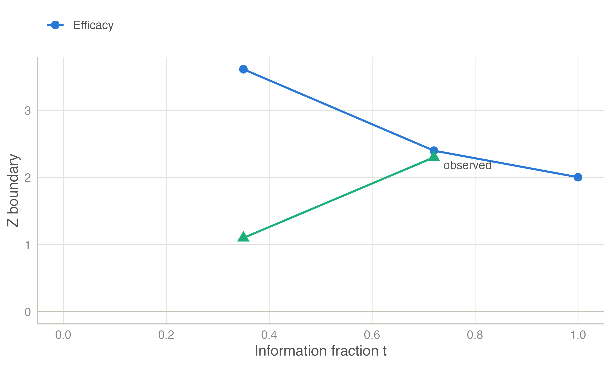
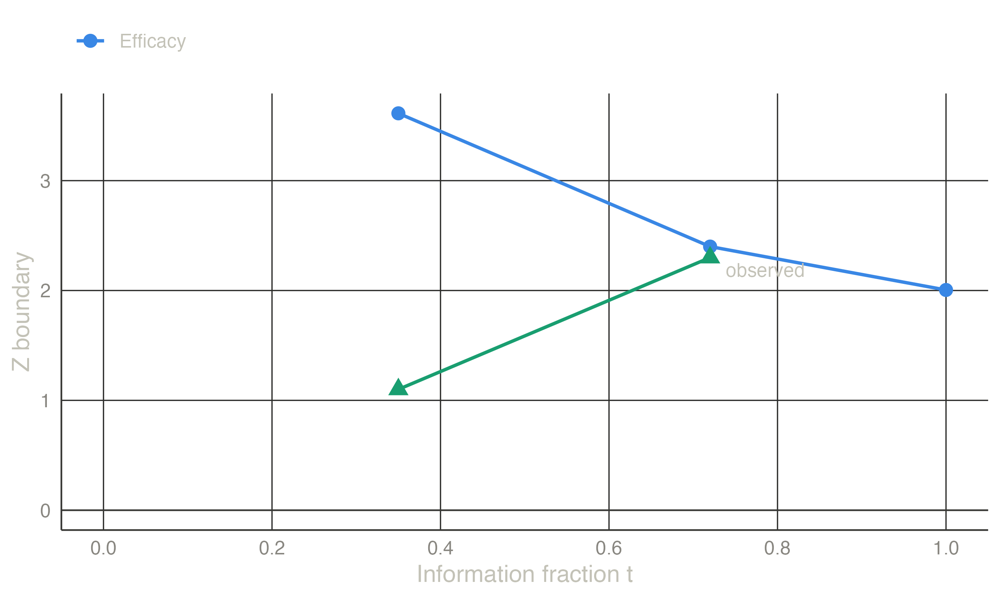

| Look | t | Z | B-value | Efficacy bound | Decision | RCI lower | RCI upper | CP (design effect) | CP (trend) | Predictive power |
|---|---|---|---|---|---|---|---|---|---|---|
| 1 | 0.350 | 1.100 | 0.651 | 3.613 | Continue | -1.303 | 2.443 | 0.833 | 0.437 | 0.463 |
| 2 | 0.720 | 2.300 | 1.952 | 2.400 | Continue | -0.036 | 1.699 | 0.948 | 0.909 | 0.871 |
Interim monitoring
At each look: recompute the boundaries at the observed information, decide, and judge whether continuing is worthwhile with conditional and predictive power.
What happens at an interim analysis
The unblinded results go to the data monitoring committee (DMC). The statistician computes the current estimate, its standard error and \(Z_k\). The information fraction is \(t_k = I_k / I_{\max}\): events over planned events for survival, patients over planned patients otherwise. The boundaries are then recomputed at the observed \(t_k\) with the pre-specified spending function, and the result is compared with them (Lan and DeMets 1983; 2006). The boundaries guide the DMC; they do not replace its judgement, which also weighs safety, secondary outcomes and external evidence (DeMets and Ellenberg 2016).
Three practical points:
- Unplanned timing. The number and timing of looks can differ from the plan, as long as the changes do not depend on the results (Lan and DeMets 1989).
- Final look. At the final analysis all remaining \(\alpha\) is spent at the information actually obtained. This handles over- and under-running.
- Non-binding futility. A non-binding futility boundary may be overruled without affecting \(\alpha\) (Futility).
Conditional power
Conditional power is the probability of rejecting \(H_0\) at the end, given the data so far and an assumption about the true effect (Gordon Lan et al. 1982). With the B-value \(B = Z_k\sqrt{t_k}\) (Lan and Wittes 1988) and only the final analysis remaining,
\[ \mathrm{CP}(\eta) = 1 - \Phi\!\left(\frac{b_K - B - \eta\,(1 - t_k)}{\sqrt{1 - t_k}}\right), \]
where \(\eta = \theta\sqrt{I_{\max}}\) is the drift assumed for the rest of the trial. Common choices are:
- the design alternative, \(\eta_1\);
- the current trend, \(\hat\eta = Z_k/\sqrt{t_k}\);
- \(H_0\) (\(\eta = 0\)).
Very low conditional power under optimistic assumptions supports stopping for futility (stochastic curtailment) (Lachin 2005).
Predictive power
Conditional power under the current trend treats a noisy estimate as the truth. Predictive power instead averages the conditional power over the uncertainty in the estimate. With a flat prior it is
\[ \mathrm{PP} = 1 - \Phi\!\left(\frac{b_K\sqrt{t_k} - Z_k}{\sqrt{1 - t_k}}\right) \]
Example: a trial monitored at unplanned times
The trial was designed with three equally spaced looks: one-sided \(\alpha = 0.025\), power 90 %, Lan–DeMets O’Brien–Fleming-type spending. The first interim analysis happens at 35 % of the information with \(Z = 1.10\); the second at 72 % with \(Z = 2.30\).
At the second look, \(Z = 2.30\) is just below the recomputed boundary (2.400), so the trial continues. All three measures agree that success at the final analysis is likely. The conditional and predictive powers here are exact over all remaining looks, so they differ slightly from the one-final-analysis formulas above. The repeated confidence intervals include zero at both looks, consistent with not stopping.


TipIn jmsequential
Sequential → Group Sequential Design with a dataset (version 0.1.0). Set up the design, then assign the variables in the Analysis of observed data box. The dataset has one row per analysis:
- the cumulative sample size or number of events;
- the estimate and its standard error (log hazard ratio for survival), or the Z statistic;
- optionally, the information fraction to use as spending time.
Tick The last row is the final analysis at the end of the trial. The Interim analyses table then shows, for each look:
- \(t\), \(Z\) and the B-value;
- the recomputed boundaries and the decision;
- the repeated confidence interval;
- conditional power under the design effect and under the current trend;
- predictive power.
The Interim analyses plot draws the path. These numbers agree with rpact’s getAnalysisResults to at least five decimals.
The example in jamovi
The looks of the example go into a small data set, one row per analysis. Type it into a new jamovi spreadsheet:
| look | n | z | t |
|---|---|---|---|
| 1 | 60 | 1.10 | 0.35 |
| 2 | 123 | 2.30 | 0.72 |
n is the cumulative sample size (35 % and 72 % of the design’s maximum of 171), and t the information fraction, which makes the spending times exact.
- Sequential → Group Sequential Design: the defaults are the design of the example.
- In the Analysis of observed data box, move n to Cumulative N or events, z to Z (instead of estimate and SE) and t to Information fraction.
The Interim analyses table repeats Table 1: boundaries 3.61 and 2.40, Continue at both looks, conditional power 0.833 and 0.948 under the design effect, predictive power 0.463 and 0.871. Its repeated confidence intervals are on the scale of the difference in means, whereas Table 1 gives them as multiples of the design effect (0.5).


References
2006. In Statistics for Biology and Health. Springer New York. https://doi.org/10.1007/978-0-387-44970-8.
DeMets, David L., and Susan S. Ellenberg. 2016. “Data Monitoring Committees — Expect the Unexpected.” New England Journal of Medicine 375 (14): 1365–71. https://doi.org/10.1056/nejmra1510066.
Gordon Lan, K. K., Richard Simon, and Max Halperin. 1982. “Stochastically Curtailed Tests in Long–Term Clinical Trials.” Communications in Statistics. Part C: Sequential Analysis 1 (3): 207–19. https://doi.org/10.1080/07474948208836014.
Lachin, John M. 2005. “A Review of Methods for Futility Stopping Based on Conditional Power.” Statistics in Medicine 24 (18): 2747–64. https://doi.org/10.1002/sim.2151.
Lan, K. K. Gordon, and David L. DeMets. 1983. “Discrete Sequential Boundaries for Clinical Trials.” Biometrika 70 (3): 659. https://doi.org/10.2307/2336502.
Lan, K. K. Gordon, and David L. DeMets. 1989. “Changing Frequency of Interim Analysis in Sequential Monitoring.” Biometrics 45 (3): 1017. https://doi.org/10.2307/2531701.
Lan, K. K. Gordon, and Janet Wittes. 1988. “The b-Value: A Tool for Monitoring Data.” Biometrics 44 (2): 579. https://doi.org/10.2307/2531870.
Spiegelhalter, David J., Laurence S. Freedman, and Patrick R. Blackburn. 1986. “Monitoring Clinical Trials: Conditional or Predictive Power?” Controlled Clinical Trials 7 (1): 8–17. https://doi.org/10.1016/0197-2456(86)90003-6.